Getting Started
Thank-you for purchasing FLATBBOOTS, the first and the only fully Responsive phpBB 3.2 style that truly integrates fully the Bootstrap Framework. Dozens of reusable components are built in to provide navigation, alerts, popovers, and much more.
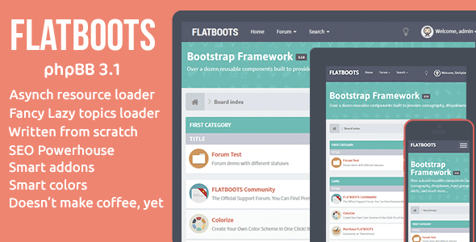Freelance
If you have any questions that are beyond the scope of this help file, please feel free to email via my user page on ThemeForest or send an email at: info@sitesplat.com. I am available for freelance work to customize you favorite phpBB3 mods or to extend BBOOTS according to your needs. Email me for a quote
Tools
The software suggested that you will need to perform any manual edits for the template files and/or upload phpBB extensions mentioned in this guide are two:
- Please, visit the FAQ Support (there are many doubts solved).
- Notepad++ (notepad-plus-plus.org)
- Upload Extensions (Upload extensions)
* "Notepad++": will allow you to save your files without BOM by default. (Older servers or vendor-specific servers have a problem interpreting them and throw errors because the scripts produce output before they should.)
You can also refer to this text editors list: Text Editors
** "Upload extension": is a neat phpBB extension will allow you to comfortably upload extensions directly from your Administration Control Panel (ACP).
BOM
Byte Order Mark (BOM), is a Unicode character used to signal the endianness (byte order) of a text file or stream. It is encoded at U+FEFF byte order mark (BOM). BOM use is optional, and, if used, should appear at the start of the text stream. Beyond its specific use as a byte-order indicator, the BOM character may also indicate which of the several Unicode representations the text is encoded in.
Installation
In order to install successfully FLATBOOTS and add proper functionality to your phpBB 3.2 forum, there are two main steps necessary that must be executed.
- Install FLATBOOTS
- Install the BBcore™ (Available in the documentation folder)
- Upload the "FLATBOOTS" entire folder in your
root/styles/folder of your server - Log in to your phpBB 3.2 Administration Control Panel (also known as ACP).
- Click on the "Customise" top navigation tab bar, then click on "Install styles" in the left inside list
- Locate the FLATBOOTS theme (previously uploaded in your root folder in step #1) and click on "Install style" to install the theme. 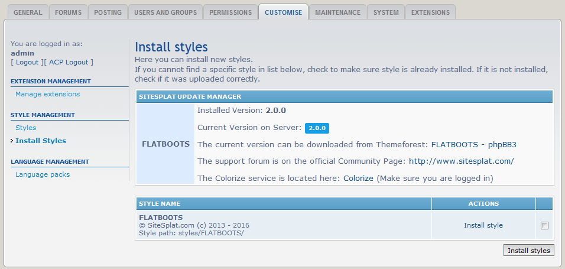
- From the documentation folder locate the BBcore and unzip the content (sitesplat folder) directly into the
root/ext/folder on your server - Click the "Customise" tab in the top navigation tab bar
- Now click on "Enable" in the extension list 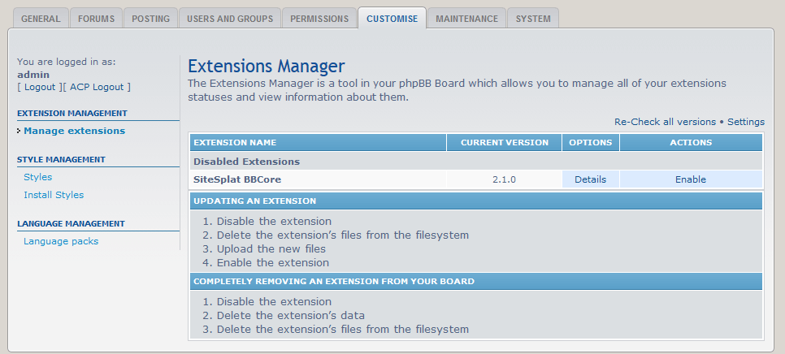
- You may see a message confirming that the BBCore extension has been enabled successfully. Well done enjoy! 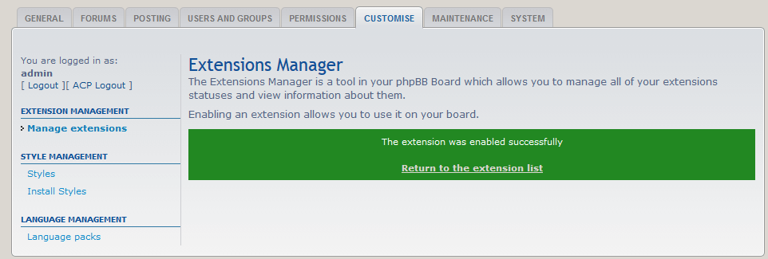
BBcore error
If an error message appears after enabling the BBcore, please check the admin log and then post on the community support forum for help.
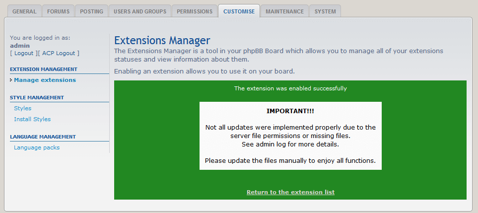 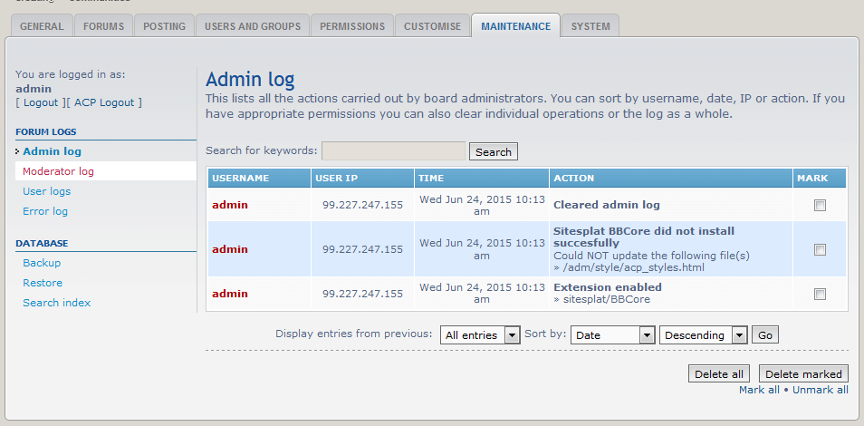Customization
Custom Edits - Custom.css stylesheet ONLY!
All your edits to the style must be added to the custom.css stylesheet included in the custom.css. This will leave the original FLATBOOTS code intact and it will be easier for future style updates to carry over your customization
Mini CMS addon?
Do you have the Mini CMS installed? Are you planning to install the Mini CMS? (Mini CMS) If the answer is yes then you do NOT need to edit the custom.css file. The Mini CMS allows you to edit directly this file via Admin Control Panel (ACP).
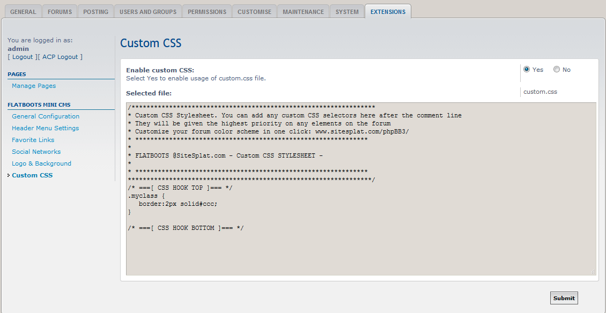
To activate your custom.css stylesheet open FLATBOOTS/template/overall_header.html and find the following commented lines:
<!-- Remove the conditional below to use the custom CSS without FLATBOOTS Mini CMS Extension -->
<!-- IF S_ALLOW_CUSTOMCSS -->
<link href="{T_THEME_PATH}/custom.css" rel="stylesheet">
<!-- ENDIF -->uncomment the two line above and below the <link href="{T_THEME_PATH}/custom.css" rel="stylesheet"> so that the entire block will look like this:
<link href="{T_THEME_PATH}/custom.css" rel="stylesheet">Social icons
To add or remove social icons open the following template file: FLATBOOTS/template/overall_footer.html and look for:
<ul class="social-network">Control your social links by adding or removing this line of code:
<a title="Google+" href="#1"><i class="fa fa-google-plus google-plus-color"></i></a>You can change the icons by using any of the font awesome icon classes ready available (you can refer to this list: FontAwesome).
fa fa-google-plusFORUM FONT
You can change the font by adding and removing the through a simple link generated with google free font library
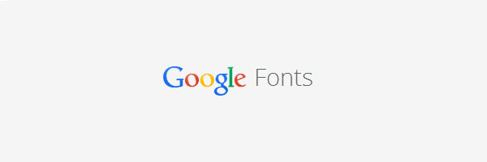Choose your font from here: Google free font then in the overall_header.html find:
<!-- Google free font here -->then add your font link below that line:
<link href='http://fonts.googleapis.com/css?family=Source+Sans+Pro:400,600' rel='stylesheet' type='text/css'>
<link href='http://fonts.googleapis.com/css?family=Roboto+Condensed:400,700' rel='stylesheet' type='text/css'>Now you need to call the font family for the various elements. Lets say you would like to replace the font body with the Roboto family type.
In this case you would add this to your custom.css located in FLATBOOTS/theme/ folder. Your code should look like this:
body {
color: #8d9aa5;
margin: 0;
font-family: 'Roboto','Arial','Helvetica',sans-serif;
background-color: #ECF0F1;
}Background
For the main forum background image and or color add the following sample to: FLATBOOTS/theme/custom.css
body {
background: url("./images/tile-bg-head.png") repeat fixed 0 0 #26bcb5;
}Don't forget your image
Make sure to upload your image in the FLATBOOTS/theme/images/ folder and then clear your forum, theme and browser cache for the changes to show up
In order to get the Twitter feed from your own Twitter page you need to have a valid Twitter account and then add the Twitter account handler to the forum footer.
Open the overall_footer.html file and find this line:
<!-- ELSE -->sitesplat<!-- ENDIF -->Replace the text "sitesplat" with your own twitter handler. That's it! your twitter feed will now be displayed in the footer seection.
You can also set your a visible and clickable Twitter handle. Open the overall_footer.html file and find this line:
<a href="https://twitter.com/SiteSplat">{L_JOIN_US_TWITTER} <small>@SiteSplat</small></a>Replace this link: https://twitter.com/SiteSplat with your own Twitter link page
Replace this Twitter handle: @SiteSplat with your own Twitter handle
Logo
Open the overall_header.html template file located in: FLATBOOTS/template/ and find:
<a class="navbar-brand" href="<!-- IF U_SITE_HOME -->{U_SITE_HOME}<!-- ELSE -->{U_INDEX}<!-- ENDIF -->">{L_FLATBOOTS}</a>Replace the string {L_FLATBOOTS} with your IMG tag:
<img style="max-width:100px; margin-top: -8px;" src="{T_THEME_PATH}/images/logo.png" class="img-responsive" alt="Forum Logo">Upload your logo
You logo should be uploaded in the following folder: FLATBOOTS/theme/images/
In order to have it displayed you also need to refresh your theme, forum and browser cache as shown below:
Colors
Change colors with a click with the COLORIZE service:
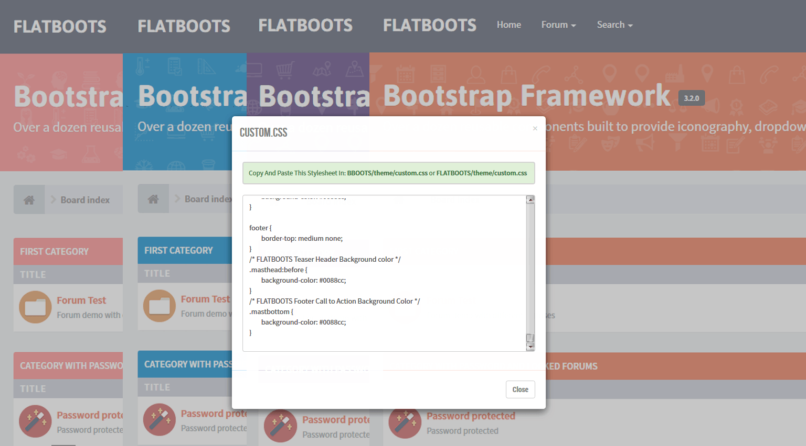You can find the COLORIZE service at www.sitesplat.com/phpBB3/themer.php to generate your own custom color.
Once you generated your own color, Open the following CSS stylesheet located in: FLATBOOTS/theme/custom.css and paste your code after the following comment block in that stylesheet:
Enable the custom.css stylesheet!
Make sure to enable the custom.css stylesheet in the overall_header.html file as described here: Customization
/*****************************************************************
* Custom CSS Stylesheet. You can add any custom CSS selectors here after the comment line.
* They will be given the highest priority on any elements on the forum
* Personalize your forum color scheme in one click here: www.sitesplat.com/phpBB3/
* **************************************************************
*
* FLATBOOTS @SiteSplat.com - Custom CSS STYLESHEET -
*
* **************************************************************
*****************************************************************/
If you wish to change come colors manually you can find some common locations in the CSS code generated via the COLORIZE service.
For example if you would like to change the Header background color or the "call To Action" bar background color you can find the commented references in the custom generated with COLORIZE:
/* FLATBOOTS Teaser Header Background color */
.masthead:before {
background-color: #50a846;
}
/* FLATBOOTS Footer Call to Action Background Color */
.mastbottom {
background-color: #50a846;
}
Clear the Cache
Make sure to purge the theme, forum and browser cache everytime you add a new color!
A) Purge the Forum cache :
1) Navigate to General Tab
2) look at Purge the cache
3) Click on "Run Now" button at right
4) in the next screen, click on "Yes" to confirm
B) Purge the browser cache :
1) Hit F5 on your browser or CTRL+F5Checkbox and Radio
Super customized checkboxes and radio buttons for your style!
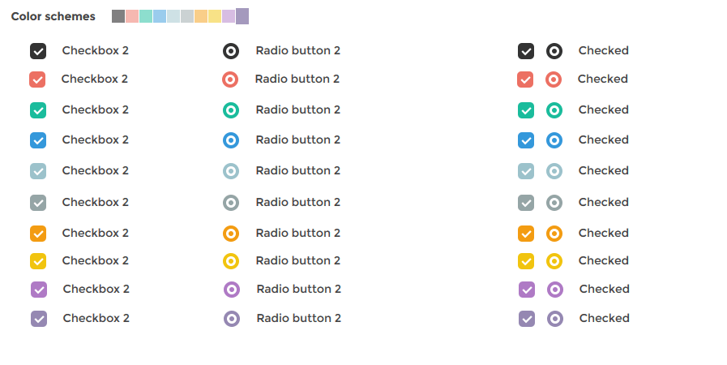Plugin features
- Identical inputs across different browsers and devices — both desktop and mobile
- Touch devices support — iOS, Android, BlackBerry, Windows Phone, Amazon Kindle
- Keyboard accessible inputs — Tab, Spacebar, Arrow up/down and other shortcuts
- Screenreader accessible inputs — ARIA attributes for VoiceOver and others
- Customization freedom — use any HTML and CSS to style inputs (try 6 Retina-ready skins)
- 32 options to customize checkboxes and radio buttons
- 11 callbacks to handle changes
- 9 methods to make changes programmatically
- Saves changes to original inputs, works carefully with any selectors
The checkbox and radio colors can be easily changed.
-
Open the documentation folder and copy the content of the custom.css stylesheet (It includes 10 different colors as shown in the screenshot above) and paste it into:
FLATBOOTS/theme/custom.css.
For different from the default color schemes use this code (example for Red) open FLATBOOTS/template/overall_footer.html and find:
"icheckbox_flat-aero"replace it with (for the checkbox):
"icheckbox_flat-red"Find:
"iradio_flat-aero"replace it with (for the radio):
"iradio_flat-red"The color code definitions ready to be used are the following:
Checkbox
"icheckbox_flat-red""icheckbox_flat-green""icheckbox_flat-blue""icheckbox_flat-grey""icheckbox_flat-orange""icheckbox_flat-yellow""icheckbox_flat-pink""icheckbox_flat-purple"
Radio
"iradio_flat-red""iradio_flat-green""iradio_flat-blue""iradio_flat-grey""iradio_flat-orange""iradio_flat-yellow""iradio_flat-pink""iradio_flat-purple"
Navigation
The main navigation bar can be adjusted to behave in different ways.
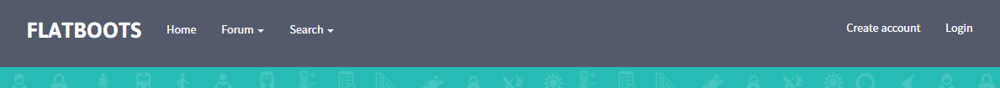The current options are:
- Standard (Default)
- Fixed Top (AKA Sticky)
- Fixed Bottom
- Change/edit links
Fixed Top
The Fixed Top option will allow you to have a Fixed (Sticky) navigation bar that will maintain the position regardless of the scrolling of the main content. This is especially useful for mobile devices.
In order to activate the Fixed Top navigation you simply need to add two classes to the navigation bar and the main header banner.
Open FLATBOOTS/template/overall_header.html and find:
<header id="top" class="navbar navbar-inverse navbar-static-top flat-nav">Replace it with:
<header id="top" class="navbar navbar-inverse navbar-static-top flat-nav navbar-fixed-top">Open FLATBOOTS/template/addons/header_teaser_body.html and find:
<div class="flat-header">Replace it with:
<div class="flat-header flat-header-fixed-top">There is a known issue with the sticky navigation. For additional information see: https://github.com/twbs/bootstrap/issues/1768 and also: https://stackoverflow.com/questions/10732690/offsetting-an-html-anchor-to-adjust-for-fixed-header. However a workaround can be applied. Open the FLATBOOTS/template/viewtopic_body.html and find:
<!-- INCLUDE overall_footer.html -->Before on a new line add:
<script>
head.ready(function () {
!function(o,n){var t=function(){var n=o(":target"),t=100;n.length>0&&o("html, body").stop().animate({scrollTop:n.offset().top-t},200)};o(n).on("hashchange load",function(){t()})}(jQuery,window);
});
</script>Fixed Bottom
The Fixed Bottom option will allow you to have a Fixed (Sticky) navigation bar like the above option but the position will be at the bottom of the forum instead.
Open FLATBOOTS/template/overall_header.html and find:
<header id="top" class="navbar navbar-inverse navbar-static-top flat-nav">Replace it with:
<header id="top" class="navbar navbar-inverse navbar-static-top flat-nav navbar-fixed-bottom">Change/edit links
The default links can be changed, edited or added by editing the navigation file. Open: FLATBOOTS/template/addons/navigation.html in order to change, edit or add links.
Header
The Header tile is stored in the addons folder within the FLATBOOTS template folder.
This block can be modifed to reflect your forum community slogan and/or favorite images.
the current available options are:
- Standard (Default)
- Change image and color
- Animation Turn ON/OFF
Open FLATBOOTS/template/addons/header_teaser_body.html and find:
<h1>{L_FLATBOOTS_INTRO} <a class="label label-call" href="http://getbootstrap.com/">{L_BOOTSTRAP_VERSION}</a></h1>
<p>{L_FLATBOOTS_EXPLAIN}</p>The language variables {L_FLATBOOTS_INTRO} and {L_FLATBOOTS_EXPLAIN} are part of the BBcore and once installed they can be found and edited to reflect your own text in the following file:your_forum_root/ext/sitesplat/BBCore/language/en/BBCore.php
Change the image and color
The default icons image can be changed via CSS. Make sure to upload your image in:FLATBOOTS/theme/images/
Add the following to FLATBOOTS/theme/custom.css:
.masthead:before {
background: url("./images/tile-bg-head.png");
background-color: #26bcb5;
}Replace tile-bg-head.png with the title of your image and save.
If you have a transparent image you can also set the background color to it. In the default example is set to : #26bcb5 Use the hex value to set your color.
Turn ON/OFF the animation
The animation can be easily turned on/off
Open FLATBOOTS/theme/custom.css and add the following to turn the the animation off:
.masthead {
animation-name: sideupscroll-off;
}Footer
The footer is divided in tree main parts. Two sections and the actual footer block.
- Section one - Call To Action
- Section two containing:
- About us
- Footer block containing:
- Navigation Links
- Social links
The footer template is located in: FLATBOOTS/tempalte/overall_footer.html
Section one - Call To Action
This call to action bar can be found in the addons folder. Open: FLATBOOTS/template/addons/call_to_action_body.html
The language variables {L_CALL_TO_ACTION_FOOTER} and {L_PURCHASE_NOW_BTN} are part of the BBcore and once installed they can be found and edited to reflect your own text in the following file:your_forum_root/ext/sitesplat/BBCore/language/en/BBcore.php
Section two - About us and Twitter
The about us text is accessible via language file. The variables are: {L_FLATBOOTS_ABOUT_TITLE} and {L_FLATBOOTS_ABOUT_PART_ONE}
The Twitter block and function is explained in Here
The navigation links can be edited within the same overall_footer.html file. Find:
<ul class="list-inline footer-nav">
<li><a href="{U_ADVERTISE}" title="">{L_ADVERTISE}</a></li>
<li><a href="{U_PRIVACY}" title="">{L_PRIVACY}</a></li>
<li><a href="{U_DMCA}" title="">{L_DMCA}</a></li>
<li><a href="{U_TERMS_USE}" title="">{L_TERMS}</a></li>
<li><a href="{U_CONTACT}" title="">{L_CONTACT}</a></li>
</ul>and change, edit or add links contained the the block.
The social links and icons are explained here: Social links
Recent Topics "Custom Extensions"
The Ajax Fancy Lazy Topics Loader can be downloaded for free from: SiteSplat - Fancy Lazy Topic Loader
Fancy Lazy Topics Loader $250+ value!
It can be installed via "Upload extension" or drop directly into the ext folder.
Fancy Lazy Topics Loader Options (Under ACP > General: Board index):
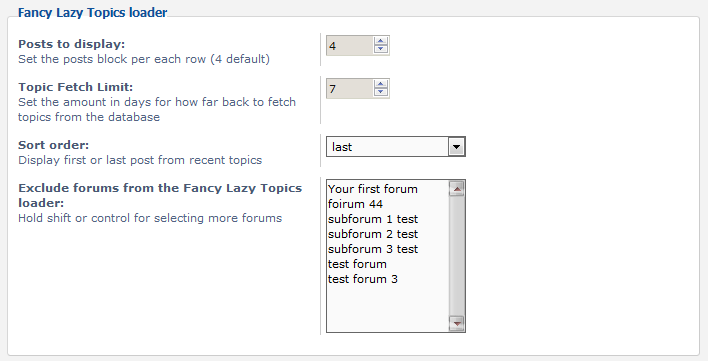- Posts to display
- Topic Fetch Limit
- Sort order
- Forum exclusion
TRANSLATIONS
You can add your own language pack to your forum by downloading and installing the official phpBB3 language packs here: Language Packs
Once the language pack is installed you need to translate the FLATBOOTS's own language file. This file gets installed automatically with the BBcore package.
The location is: ext/sitesplat/language/en/BBcore.php. Open BBcore.php file with notepad++, translate the content and save. Now you need to add the BBcore.php file to your language pack folder inside the BBcore ext/language/ (previously installed) directory. For example if you installed French, the location where to copy the BBcore.php file will be in: root/ext/sitesplat/language/fr/
Language packs already available
check out the official support forum at: FLATBOOTS Language Packs and see if there is already a language file translated.
EXTENSIONS
Extension is the new phpBB 3.2 system which allows the forum Admin to "Extend" the basic phpBB forum functionality. If you are familiar to WordPress with the plugins system you will find to be comfortable with the extensions as well.
Once uploaded in the "ext" directory on your server, forum root, you will be able to enable it directly from the Administration Control Panel with a click of a button.
Tons of free extensions
check out the official, ever growing community support forum at: http://sitesplat.com to find all the extensions available. You can also place requests for new extensions and/or order custom development to shape your community to your needs!